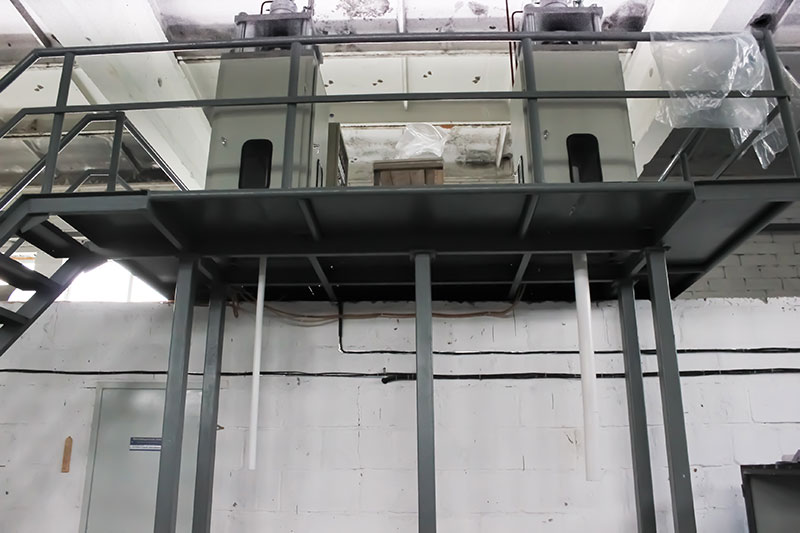

В последнее время все чаще и чаще стали применять фторопластовые трубы, заменяя ими металлические. Трубы из такого материала актуальны для транспортировки агрессивных веществ или сред с экстремальной температурой и давлением.
Применяются трубы из фторопласта 4 в основном на предприятиях по производству минеральных удобрений, химических веществ, целлюлозы и бумаги... Такие трубы отлично защищают конструкции от налипания используемых веществ.
Преимущества:
Стойкость у фторопласта исключительная — она выше, чем у известных благородных металлов. А главное, этот материал биологически и физически безопасен.
Вы можете заказать у нас фторопластовые трубы, цена которых является абсолютно доступной, а качество позволяет использовать их в широком диапазоне давлений и температур.
Фторопластовые трубы изготавливаются экструзионным способом из специальных марок политетрафторэтилена с использованием экструдера.
Оборудование позволяет производить заготовки диаметром от 7 до 300 миллиметров, при этом полученные изделия не только сохраняют основные практически-важные свойства фторопласта, но и дают возможность использовать их в широком диапазоне давлений и температур в качестве:
Так же, как и втулки, трубы из фторопласта могут быть использованы для производства комплектующих деталей различных размеров. Отличительной особенностью фторопластовых труб является ненормированная длина, позволяющая изготавливать детали любых размеров.
Главным назначением труб из фторопласта является защита такого оборудования, как:
от агрессивного воздействия синтезируемых или транспортируемых веществ, что обеспечивает длительный срок службы, низкие затраты на ремонт и замену оборудования.

Перед монтажом все изделия обязательно должны проходить гидравлические испытания — это позволит убедиться в их качестве. Применяется метод сварки в раструб. Нагревание проходит до 390 градусов, это зависит от самого диаметра трубы. Соединяют трубы с помощью электронагревателя в несколько этапов. Электронагревателем в форме клещей захватывают конец трубы и закрепляют фланцевым соединением.
Нефтевая, химическая промышленность, технологические коммуникации, различные сооружения — здесь просто необходимы фторопластовые трубы. Также фторопласт используется в машиностроении в качестве опорных элементов и подшипников. В легкой промышленности этот материал используется как покрытие, делая изделия водостойкими. В медицине его используют в изготовлении протезов внутренних органов. Из него делают выключатели, кабели, платы и многое другое.
Разрушить материал возможно только с помощью щелочных металлов и трифторидом хлора.
ООО «СВС» предлагает поставку только качественных материалов, а также мы принимаем к исполнению футерованное оборудование по чертежам клиента.
ООО «СВС» гарантирует поставку качественных труб из фторопласта-4 стандартных типо-размеров, так и по индивидуальному заказу заданных параметров.
ООО «СВС» предлагает услуги по защите оборудования и выполняет поставку футерованного оборудования по чертежам заказчика любых форм и размеров.